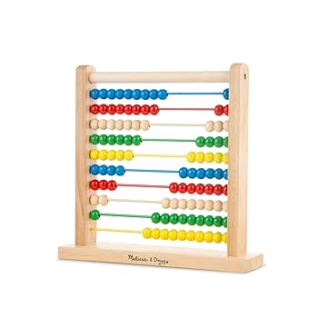
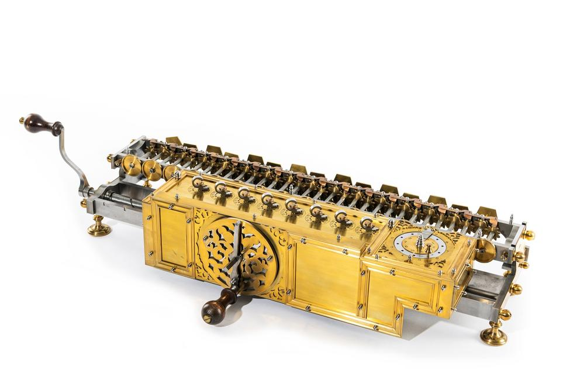

Computadora, es una máquina electrónica digital programable que ejecuta una serie de comandos para procesar los datos de entrada, obteniendo convenientemente información que posteriormente se envía a las unidades de salida.
Una computadora ,está compuesta por numerosos y diversos circuitos integrados y varios elementos de apoyo, extensión y accesorios, que en conjunto pueden ejecutar tareas diversas con suma rapidez y bajo el control de un programa (software).
La constituyen dos partes esenciales, el hardware, que es su estructura física (circuitos electrónicos, cables, gabinete, teclado, ratón, etc.), y el software, que es su parte intangible (programas, datos, información, documentación, etc).
Historia
A Través del tiempo Eventos más trascendentales Abaco (5,000 años atrás)  Primera Generación (1945-1956)
- La computadora fue utilizada para fines militares durante la Seguna Guerra Mundial.
- IBM creó la primera calculadora electrónica en 1944.
- Uso de los tubos al vacío.
Calculadora de Pascal (1642) 
Segunda Generación (1956-1963)
- Se remplazaron los tubos al vacío por los transistores.
- Se crearon los lenguajes de alto nivel como COBOL y FORTRAN.
Máquina de multiplicar de Leibniz(1694)  Tercera Generación (1964-1971)
- Uso de chips de silicón.
- Sistemas operativos.
Clases y categorías
Clases y Categorías de Computadoras Clases Análoga Digital De uso general De uso especial Categorías Supercomputadora Mainframe Minicomputadoras Servidor Microcomputadoras
Componentes
- Caja (Case)
- Placa base
- Microprocesador
- Bios
- Memoria
- Teclado
- Disco duro
- Monitor
Referencias